Estación del Pacífico · fachada
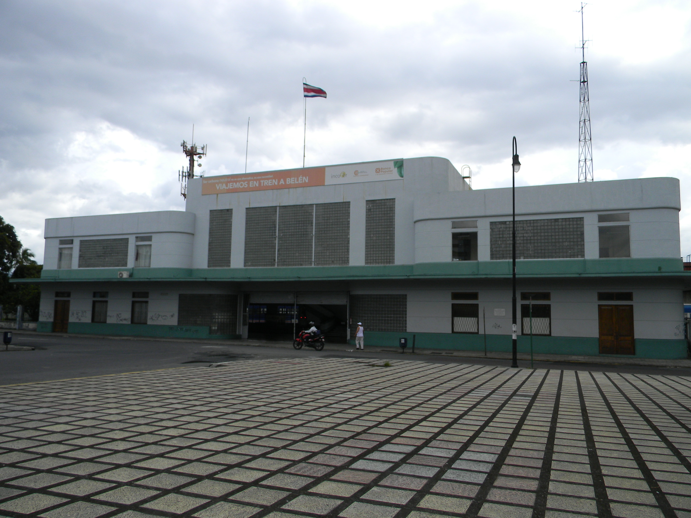
Chris Valoba · 2011-10-27 · CC BY-SA 3.0
Referencias fotográficas · fuentes, fechas y créditos individuales. Investigación de octubre de 2026.
Investigación · Créditos completos · Catálogo para agentes

Chris Valoba · 2011-10-27 · CC BY-SA 3.0
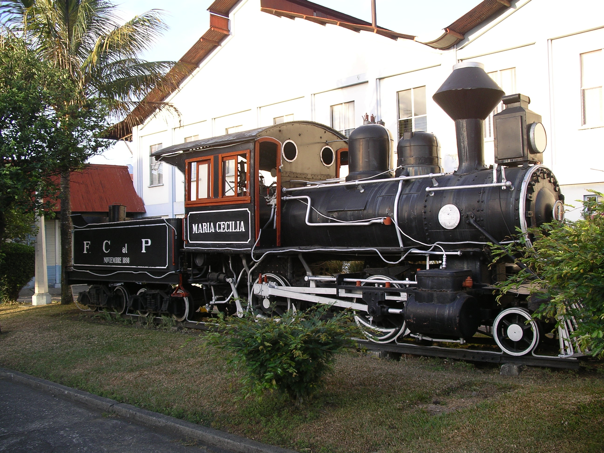
Nils Öberg · 2007-02-11 (ficha; EXIF discrepante) · CC BY-SA 3.0
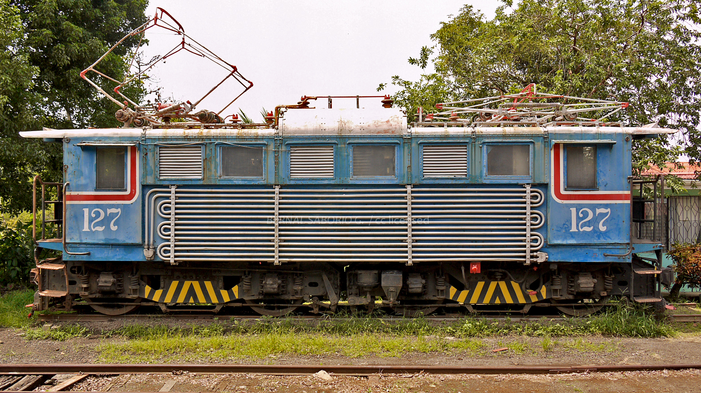
Bernal Saborio · 2016-06-19 · CC BY-SA 2.0
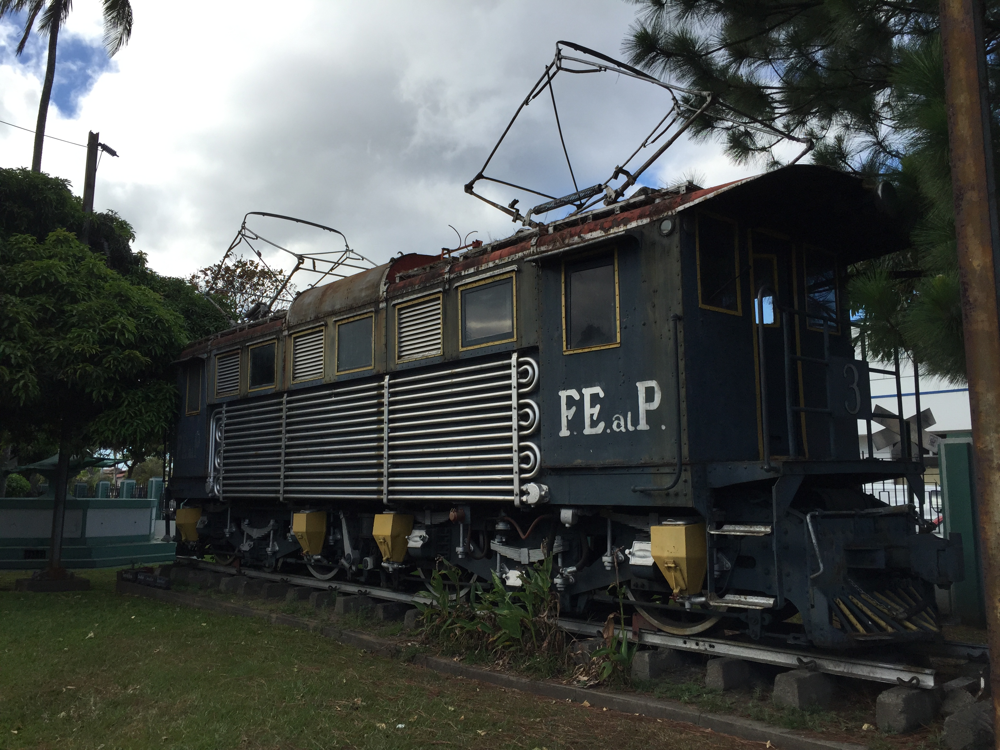
Arnold Reinhold · 2015-01-06 · CC BY-SA 4.0
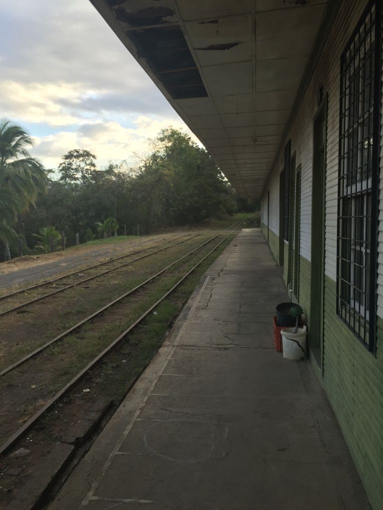
Alexbarbershop · 2015 · CC BY 4.0
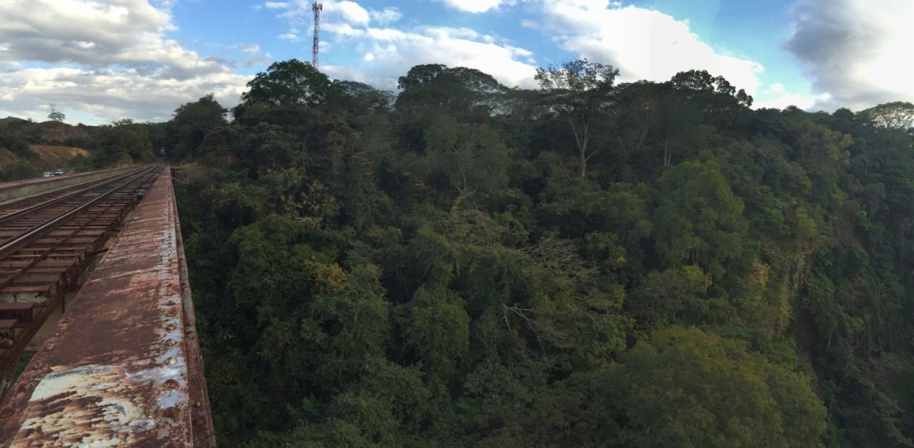
Alexbarbershop · 2015 · CC BY 4.0
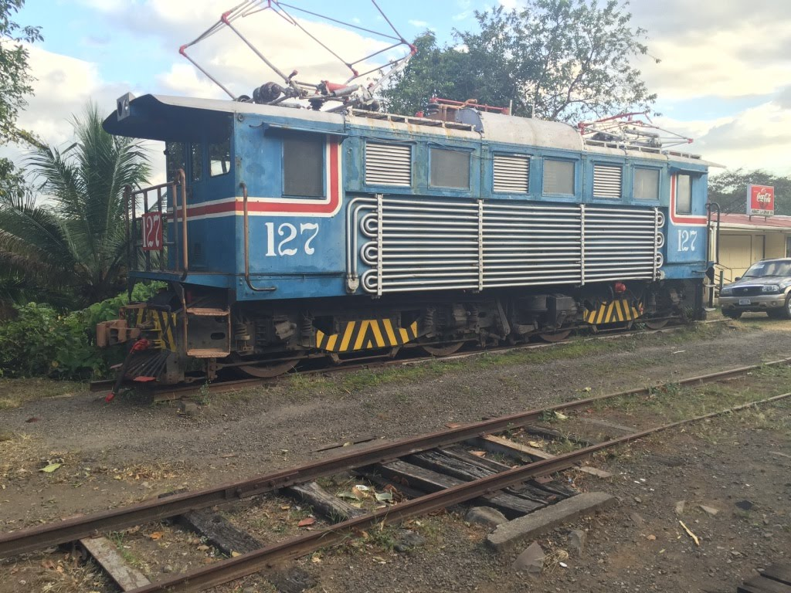
Alexbarbershop · 2015 · CC BY 4.0
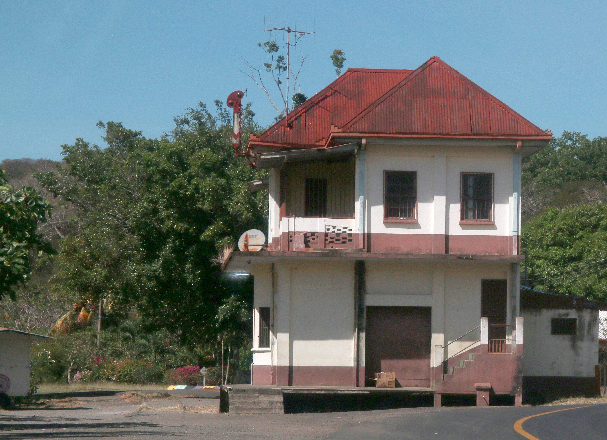
Steve Knight · 2026-01-24 · CC BY 4.0
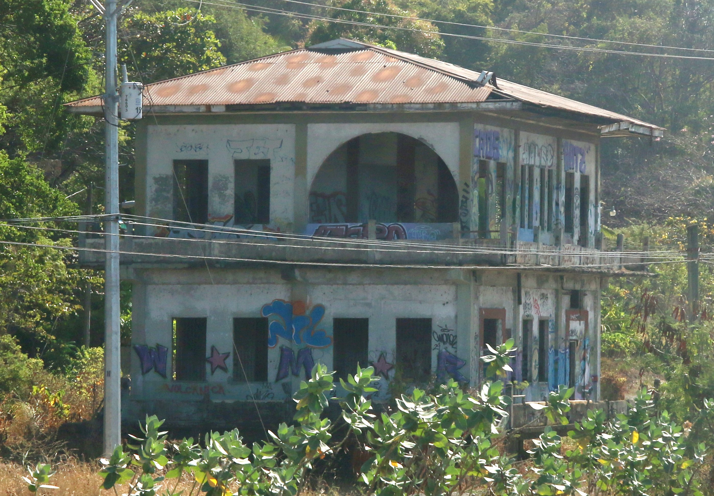
Steve Knight · 2026-01-24 · CC BY 4.0
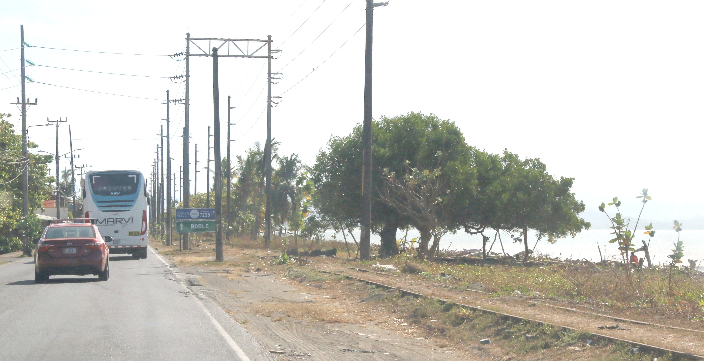
Steve Knight · 2026-01-24 · CC BY 4.0
Ficha original · Licencia / derechos
Photo description calls the line metre gauge; do not use this caption as technical authority. OSM ways record 1067 mm.
Referencia disponible en la fuente enlazada.
Balou46 · 2023-01-26 · CC BY-SA 4.0
Ficha original · Licencia / derechos
Source identified; original download rate-limited (HTTP 429). View on source page.
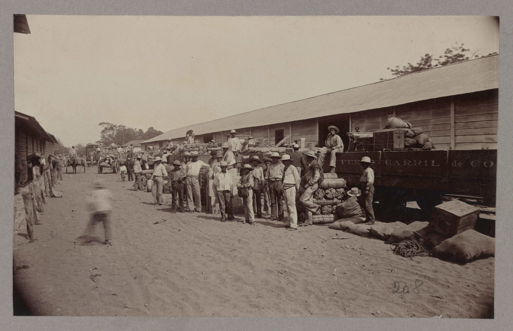
Library of Congress, autor no identificado · 1880–1900 · No known restrictions on publication (LOC)
Referencia disponible en la fuente enlazada.
Municipalidad de Orotina / foto de referencia publicada · fecha no identificada · Sin licencia abierta identificada; referencia, no redistribuir como asset


,_Near_Rio_Grande_Gorge_%26_Route_27,_Alajuela_Province,_Costa_Rica_(2).jpg){kind=link}
.jpg){kind=link}
.jpg){kind=link}